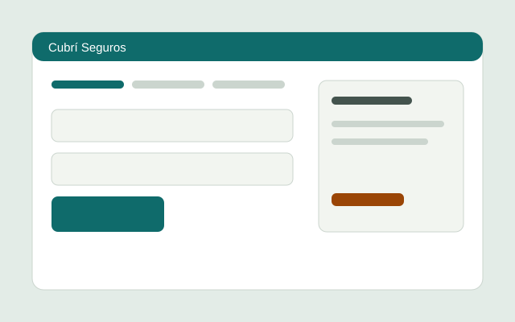
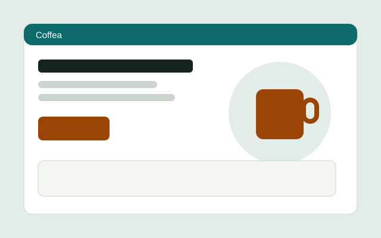
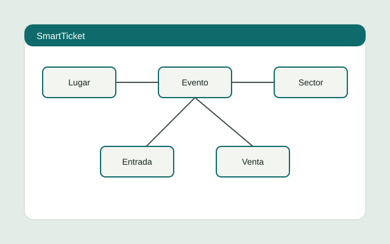

Diseño UX
Entiendo a quién se diseña antes de dibujar: proto-personas, benchmark y pruebas de uso.
- Research
- Benchmark
- Card sorting
- Test de usabilidad
Disponible para prácticas y proyectos freelance
Tu Nombre · Diseño UX/UI y front-end
Investigo, prototipo en Figma y llevo el diseño a código HTML y CSS accesible, con decisiones que puedo explicar.
Entiendo a quién se diseña antes de dibujar: proto-personas, benchmark y pruebas de uso.
Sistemas visuales coherentes: paleta, escala tipográfica y componentes reutilizables.
Maquetación semántica, responsive y accesible, sin frameworks.
Flujo de trabajo versionado, publicado y medido.
Trabajos de la carrera presentados como problema, proceso, solución y resultado.

Checkout en pasos para contratar un seguro de celular sin perderse ni dudar del precio.
Aprendizaje: mostrar el costo total en cada paso reduce la duda.

Landing estática en HTML y CSS puro construida a partir de un PRD y un diseño de Figma.
Aprendizaje: un design system chico evita decidir lo mismo dos veces.

API REST para vender entradas, con entidades claras: lugar, sector, evento, entrada, cliente y venta.
Aprendizaje: un buen modelo de datos es la base de una buena interfaz.
2024 – actualidad
FCyT, Sede Concepción del Uruguay
2026
FCyT, cátedra del Mg. Ernesto Ledesma
2025
Plataforma online
Soy estudiante de Sistemas de Información y me interesa el punto donde el diseño y el código se encuentran. Me gusta que una interfaz se explique sola y que funcione con teclado, en un celular chico y con conexión lenta.
Valido con personas reales y cambio lo que no funciona.
Contraste, foco visible y semántica no se dejan para el final.
Pocas reglas, bien aplicadas, y un sistema que se pueda mantener.
Contratar un seguro online suele implicar formularios largos, precios que cambian en el último paso y poca claridad sobre qué cubre el plan. La gente abandona o se arrepiente.
El sitio está publicado y funciona con teclado y en pantallas chicas. Aprendí que la claridad del precio pesa más que cualquier detalle visual, y que probar temprano ahorra rehacer trabajo.